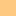

<!doctype html>
<html lang="en">
    <head>
        <meta charset="utf-8">
        <meta http-equiv="X-UA-Compatible" content="IE=edge">
        <meta name="viewport" content="initial-scale=1,user-scalable=no,maximum-scale=1,width=device-width">
        <meta name="mobile-web-app-capable" content="yes">
        <meta name="apple-mobile-web-app-capable" content="yes">
        <link rel="stylesheet" href="css/leaflet.css">
        <link rel="stylesheet" href="css/qgis2web.css"><link rel="stylesheet" href="css/fontawesome-all.min.css">
        <style>
        html, body, #map {
            width: 100%;
            height: 100%;
            padding: 0;
            margin: 0;
        }
        </style>
        <title></title>
    </head>
    <body>
        <div id="map">
        </div>
        <script src="js/qgis2web_expressions.js"></script>
        <script src="js/leaflet.js"></script>
        <script src="js/leaflet.rotatedMarker.js"></script>
        <script src="js/leaflet.pattern.js"></script>
        <script src="js/leaflet-hash.js"></script>
        <script src="js/Autolinker.min.js"></script>
        <script src="js/rbush.min.js"></script>
        <script src="js/labelgun.min.js"></script>
        <script src="js/labels.js"></script>
        <script src="data/NDRE_4.js"></script>
        <script src="data/NDVI_5.js"></script>
        <script src="data/Tablas_6.js"></script>
        <script>
        var map = L.map('map', {
            zoomControl:true, maxZoom:20, minZoom:1
        }).fitBounds([[20.89966141086124,-102.40525548397692],[20.90619772362253,-102.39626542579637]]);
        var hash = new L.Hash(map);
        map.attributionControl.setPrefix('<a href="https://github.com/tomchadwin/qgis2web" target="_blank">qgis2web</a> &middot; <a href="https://leafletjs.com" title="A JS library for interactive maps">Leaflet</a> &middot; <a href="https://qgis.org">QGIS</a>');
        var autolinker = new Autolinker({truncate: {length: 30, location: 'smart'}});
        var bounds_group = new L.featureGroup([]);
        function setBounds() {
        }
        map.createPane('pane_GoogleSatellite_0');
        map.getPane('pane_GoogleSatellite_0').style.zIndex = 400;
        var layer_GoogleSatellite_0 = L.tileLayer('http://mt1.google.com/vt/lyrs=s&x={x}&y={y}&z={z}', {
            pane: 'pane_GoogleSatellite_0',
            opacity: 1.0,
            attribution: '',
            minZoom: 1,
            maxZoom: 20,
            minNativeZoom: 0,
            maxNativeZoom: 22
        });
        layer_GoogleSatellite_0;
        map.addLayer(layer_GoogleSatellite_0);
        map.createPane('pane_RGBdrone_1');
        map.getPane('pane_RGBdrone_1').style.zIndex = 401;
        var img_RGBdrone_1 = 'data/RGBdrone_1.png';
        var img_bounds_RGBdrone_1 = [[20.89982730976471,-102.40436771109624],[20.906031860814206,-102.39715323793213]];
        var layer_RGBdrone_1 = new L.imageOverlay(img_RGBdrone_1,
                                              img_bounds_RGBdrone_1,
                                              {pane: 'pane_RGBdrone_1'});
        bounds_group.addLayer(layer_RGBdrone_1);
        map.addLayer(layer_RGBdrone_1);
        map.createPane('pane_NDREdrone_2');
        map.getPane('pane_NDREdrone_2').style.zIndex = 402;
        var img_NDREdrone_2 = 'data/NDREdrone_2.png';
        var img_bounds_NDREdrone_2 = [[20.899351827634668,-102.40470411956733],[20.90618518140563,-102.39689505898447]];
        var layer_NDREdrone_2 = new L.imageOverlay(img_NDREdrone_2,
                                              img_bounds_NDREdrone_2,
                                              {pane: 'pane_NDREdrone_2'});
        bounds_group.addLayer(layer_NDREdrone_2);
        map.addLayer(layer_NDREdrone_2);
        map.createPane('pane_NDVIdrone_3');
        map.getPane('pane_NDVIdrone_3').style.zIndex = 403;
        var img_NDVIdrone_3 = 'data/NDVIdrone_3.png';
        var img_bounds_NDVIdrone_3 = [[20.89935159799111,-102.40470412351893],[20.90618541105038,-102.39689505501963]];
        var layer_NDVIdrone_3 = new L.imageOverlay(img_NDVIdrone_3,
                                              img_bounds_NDVIdrone_3,
                                              {pane: 'pane_NDVIdrone_3'});
        bounds_group.addLayer(layer_NDVIdrone_3);
        map.addLayer(layer_NDVIdrone_3);
        function pop_NDRE_4(feature, layer) {
            var popupContent = '<table>\
                    <tr>\
                        <td colspan="2">' + (feature.properties['fid'] !== null ? autolinker.link(feature.properties['fid'].toLocaleString()) : '') + '</td>\
                    </tr>\
                    <tr>\
                        <td colspan="2">' + (feature.properties['id'] !== null ? autolinker.link(feature.properties['id'].toLocaleString()) : '') + '</td>\
                    </tr>\
                    <tr>\
                        <td colspan="2">' + (feature.properties['left'] !== null ? autolinker.link(feature.properties['left'].toLocaleString()) : '') + '</td>\
                    </tr>\
                    <tr>\
                        <td colspan="2">' + (feature.properties['top'] !== null ? autolinker.link(feature.properties['top'].toLocaleString()) : '') + '</td>\
                    </tr>\
                    <tr>\
                        <td colspan="2">' + (feature.properties['right'] !== null ? autolinker.link(feature.properties['right'].toLocaleString()) : '') + '</td>\
                    </tr>\
                    <tr>\
                        <td colspan="2">' + (feature.properties['bottom'] !== null ? autolinker.link(feature.properties['bottom'].toLocaleString()) : '') + '</td>\
                    </tr>\
                    <tr>\
                        <td colspan="2">' + (feature.properties['NDREmean'] !== null ? autolinker.link(feature.properties['NDREmean'].toLocaleString()) : '') + '</td>\
                    </tr>\
                </table>';
            layer.bindPopup(popupContent, {maxHeight: 400});
        }

        function style_NDRE_4_0(feature) {
            if (feature.properties['NDREmean'] >= 0.000000 && feature.properties['NDREmean'] <= 0.253593 ) {
                return {
                pane: 'pane_NDRE_4',
                stroke: false, 
                fill: true,
                fillOpacity: 1,
                fillColor: 'rgba(215,25,28,1.0)',
                interactive: false,
            }
            }
            if (feature.properties['NDREmean'] >= 0.253593 && feature.properties['NDREmean'] <= 0.264825 ) {
                return {
                pane: 'pane_NDRE_4',
                stroke: false, 
                fill: true,
                fillOpacity: 1,
                fillColor: 'rgba(254,201,129,1.0)',
                interactive: false,
            }
            }
            if (feature.properties['NDREmean'] >= 0.264825 && feature.properties['NDREmean'] <= 0.300000 ) {
                return {
                pane: 'pane_NDRE_4',
                stroke: false, 
                fill: true,
                fillOpacity: 1,
                fillColor: 'rgba(196,230,135,1.0)',
                interactive: false,
            }
            }
            if (feature.properties['NDREmean'] >= 0.300000 && feature.properties['NDREmean'] <= 0.345108 ) {
                return {
                pane: 'pane_NDRE_4',
                stroke: false, 
                fill: true,
                fillOpacity: 1,
                fillColor: 'rgba(26,150,65,1.0)',
                interactive: false,
            }
            }
        }
        map.createPane('pane_NDRE_4');
        map.getPane('pane_NDRE_4').style.zIndex = 404;
        map.getPane('pane_NDRE_4').style['mix-blend-mode'] = 'normal';
        var layer_NDRE_4 = new L.geoJson(json_NDRE_4, {
            attribution: '',
            interactive: false,
            dataVar: 'json_NDRE_4',
            layerName: 'layer_NDRE_4',
            pane: 'pane_NDRE_4',
            onEachFeature: pop_NDRE_4,
            style: style_NDRE_4_0,
        });
        bounds_group.addLayer(layer_NDRE_4);
        map.addLayer(layer_NDRE_4);
        function pop_NDVI_5(feature, layer) {
            var popupContent = '<table>\
                    <tr>\
                        <td colspan="2">' + (feature.properties['fid'] !== null ? autolinker.link(feature.properties['fid'].toLocaleString()) : '') + '</td>\
                    </tr>\
                    <tr>\
                        <td colspan="2">' + (feature.properties['id'] !== null ? autolinker.link(feature.properties['id'].toLocaleString()) : '') + '</td>\
                    </tr>\
                    <tr>\
                        <td colspan="2">' + (feature.properties['left'] !== null ? autolinker.link(feature.properties['left'].toLocaleString()) : '') + '</td>\
                    </tr>\
                    <tr>\
                        <td colspan="2">' + (feature.properties['top'] !== null ? autolinker.link(feature.properties['top'].toLocaleString()) : '') + '</td>\
                    </tr>\
                    <tr>\
                        <td colspan="2">' + (feature.properties['right'] !== null ? autolinker.link(feature.properties['right'].toLocaleString()) : '') + '</td>\
                    </tr>\
                    <tr>\
                        <td colspan="2">' + (feature.properties['bottom'] !== null ? autolinker.link(feature.properties['bottom'].toLocaleString()) : '') + '</td>\
                    </tr>\
                    <tr>\
                        <td colspan="2">' + (feature.properties['ndvi_mean'] !== null ? autolinker.link(feature.properties['ndvi_mean'].toLocaleString()) : '') + '</td>\
                    </tr>\
                </table>';
            layer.bindPopup(popupContent, {maxHeight: 400});
        }

        function style_NDVI_5_0(feature) {
            if (feature.properties['ndvi_mean'] >= 0.000000 && feature.properties['ndvi_mean'] <= 0.539117 ) {
                return {
                pane: 'pane_NDVI_5',
                stroke: false, 
                fill: true,
                fillOpacity: 1,
                fillColor: 'rgba(215,25,28,1.0)',
                interactive: false,
            }
            }
            if (feature.properties['ndvi_mean'] >= 0.539117 && feature.properties['ndvi_mean'] <= 0.568900 ) {
                return {
                pane: 'pane_NDVI_5',
                stroke: false, 
                fill: true,
                fillOpacity: 1,
                fillColor: 'rgba(254,201,129,1.0)',
                interactive: false,
            }
            }
            if (feature.properties['ndvi_mean'] >= 0.568900 && feature.properties['ndvi_mean'] <= 0.700000 ) {
                return {
                pane: 'pane_NDVI_5',
                stroke: false, 
                fill: true,
                fillOpacity: 1,
                fillColor: 'rgba(196,230,135,1.0)',
                interactive: false,
            }
            }
            if (feature.properties['ndvi_mean'] >= 0.700000 && feature.properties['ndvi_mean'] <= 0.806807 ) {
                return {
                pane: 'pane_NDVI_5',
                stroke: false, 
                fill: true,
                fillOpacity: 1,
                fillColor: 'rgba(26,150,65,1.0)',
                interactive: false,
            }
            }
        }
        map.createPane('pane_NDVI_5');
        map.getPane('pane_NDVI_5').style.zIndex = 405;
        map.getPane('pane_NDVI_5').style['mix-blend-mode'] = 'normal';
        var layer_NDVI_5 = new L.geoJson(json_NDVI_5, {
            attribution: '',
            interactive: false,
            dataVar: 'json_NDVI_5',
            layerName: 'layer_NDVI_5',
            pane: 'pane_NDVI_5',
            onEachFeature: pop_NDVI_5,
            style: style_NDVI_5_0,
        });
        bounds_group.addLayer(layer_NDVI_5);
        map.addLayer(layer_NDVI_5);
        function pop_Tablas_6(feature, layer) {
            var popupContent = '<table>\
                    <tr>\
                        <th scope="row">Tabla</th>\
                        <td>' + (feature.properties['Tabla'] !== null ? autolinker.link(feature.properties['Tabla'].toLocaleString()) : '') + '</td>\
                    </tr>\
                    <tr>\
                        <th scope="row">Superfice (ha)</th>\
                        <td>' + (feature.properties['Superfice (ha)'] !== null ? autolinker.link(feature.properties['Superfice (ha)'].toLocaleString()) : '') + '</td>\
                    </tr>\
                </table>';
            layer.bindPopup(popupContent, {maxHeight: 400});
        }

        function style_Tablas_6_0() {
            return {
                pane: 'pane_Tablas_6',
                opacity: 1,
                color: 'rgba(194,194,194,1.0)',
                dashArray: '',
                lineCap: 'square',
                lineJoin: 'bevel',
                weight: 2.0,
                fillOpacity: 0,
                interactive: true,
            }
        }
        map.createPane('pane_Tablas_6');
        map.getPane('pane_Tablas_6').style.zIndex = 406;
        map.getPane('pane_Tablas_6').style['mix-blend-mode'] = 'normal';
        var layer_Tablas_6 = new L.geoJson(json_Tablas_6, {
            attribution: '',
            interactive: true,
            dataVar: 'json_Tablas_6',
            layerName: 'layer_Tablas_6',
            pane: 'pane_Tablas_6',
            onEachFeature: pop_Tablas_6,
            style: style_Tablas_6_0,
        });
        bounds_group.addLayer(layer_Tablas_6);
        map.addLayer(layer_Tablas_6);
        var baseMaps = {};
        L.control.layers(baseMaps,{' Tablas': layer_Tablas_6,'NDVI<br /><table><tr><td style="text-align: center;"></td><td>Muy bajo</td></tr><tr><td style="text-align: center;"></td><td>Bajo</td></tr><tr><td style="text-align: center;"></td><td>Medio</td></tr><tr><td style="text-align: center;"></td><td>Alto</td></tr></table>': layer_NDVI_5,'NDRE<br /><table><tr><td style="text-align: center;"></td><td>Muy bajo</td></tr><tr><td style="text-align: center;"></td><td>Bajo</td></tr><tr><td style="text-align: center;"></td><td>Medio</td></tr><tr><td style="text-align: center;"></td><td>Bueno</td></tr></table>': layer_NDRE_4,"NDVI drone": layer_NDVIdrone_3,"NDRE drone": layer_NDREdrone_2,"RGB drone": layer_RGBdrone_1,"Google Satellite": layer_GoogleSatellite_0,},{collapsed:false}).addTo(map);
        setBounds();
        L.ImageOverlay.include({
            getBounds: function () {
                return this._bounds;
            }
        });
        </script>
    </body>
</html>
